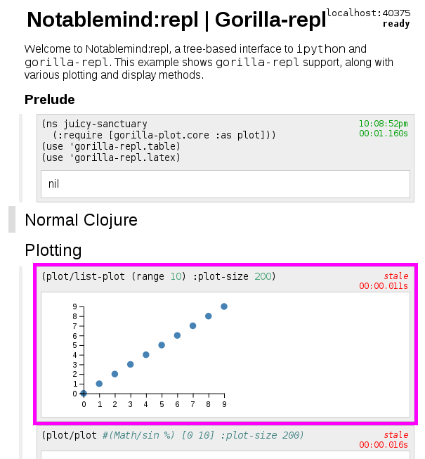

iPython Demo
iPython Demo
|
iPython Demo
|  Gorilla (clojure) Demo |
iTreed is the best way to organize your experiments, your code, and your thoughts. Interfacing with your favorite REPL backend (currently ipython and gorilla-repl are supported), it can display a variety of formats, allowing you to visualize and interact with your data. The tree structure and rich set of keyboard shortcuts allow you to edit, rearrange, and organize with ease.